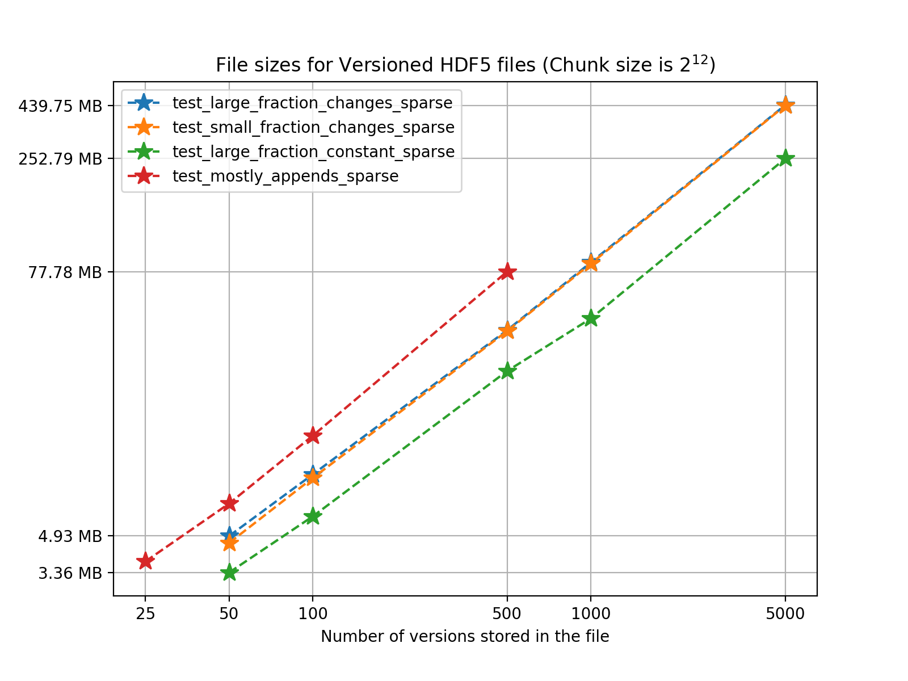
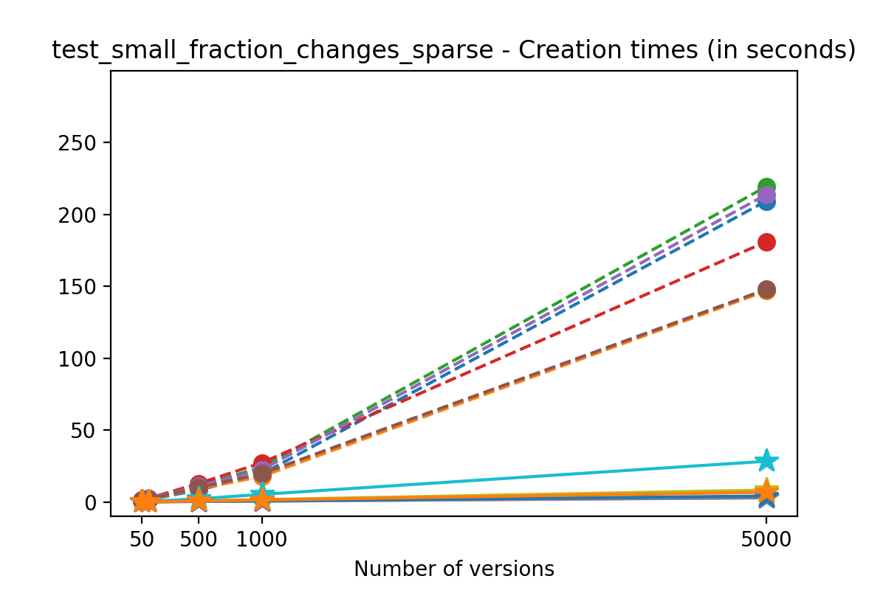
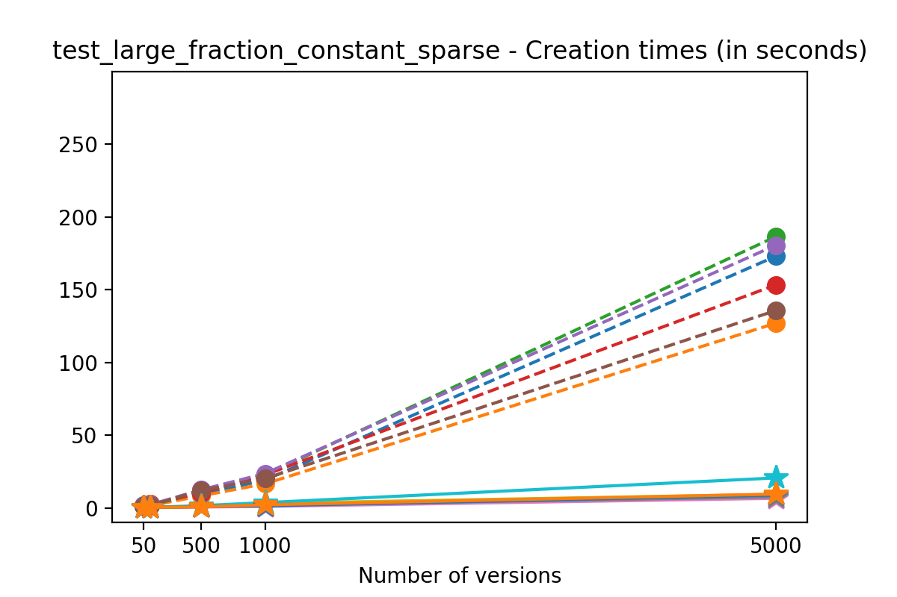
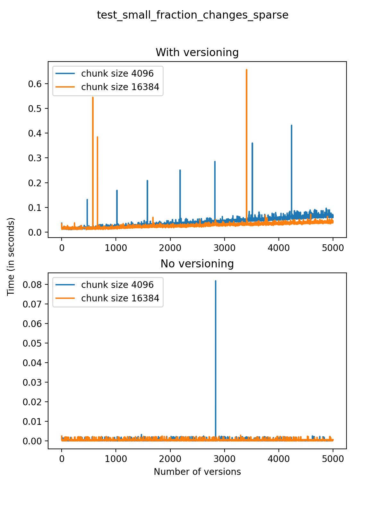
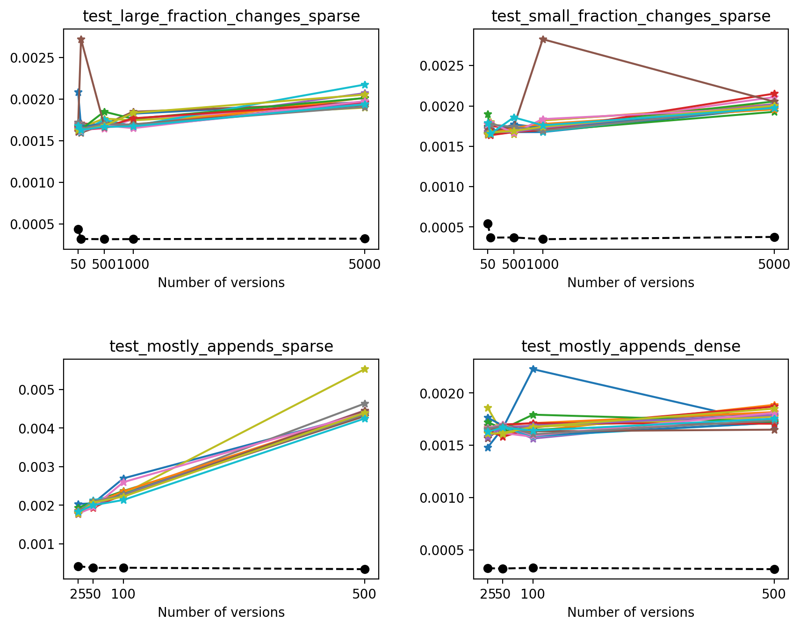

Performance of the Versioned HDF5 Library
In several industry and science applications, a filesystem-like storage model such as HDF5 is the more appropriate solution for manipulating large amounts of data. However, suppose that data changes over time. In that case, it's not obvious how to track those different versions, since HDF5 is a binary format and is not well suited for traditional version control systems and tools.
In a previous post, we introduced the Versioned HDF5 library, which implements a mechanism for storing binary data sets in a versioned way that feels natural to users of other version control systems, and described some of its features. In this post, we'll show some of the performance analysis we did while developing the library, hopefully making the case that reading and writing versioned HDF5 files can be done with a nice, intuitive API while being as efficient as possible. The tests presented here show that using the Versioned HDF5 library results in reduced disk space usage, and further reductions in this area can be achieved with the use of HDF5/h5py-provided compression algorithms. That only comes at a cost of <10x file writing speed.
What are we measuring?
Performance can mean different things for different operations. For the tests presented here, the main goals are:
- To evaluate the performance (size on disk and I/O speed) of reading/writing versioned HDF5 files and compare it with non-versioned files (that is, files where only the last version of the datasets is stored);
- To evaluate the performance when reading/writing data to a versioned HDF5 file in a set of different use cases;
- To evaluate the performance when different parameter options are considered for chunking and compression on versioned HDF5 files.
When different versions of a dataset are stored in a versioned HDF5 file, modified copies of the data are stored as new versions. This means that there may be duplication of data between versions, which might impact the performance of reading, writing or manipulating these files.
In order to analyze this, we will consider test files created with a variable number of versions (or transactions) of a dataset consisting of three ndarrays of variable length. One test includes a two-dimensional ndarray as part of this dataset, but all other test cases consist of three one-dimensional ndarrays per dataset.
With each new version a certain number of rows are added, removed, and modified. For these tests, all changes are made to elements chosen according to a power law which biases the modifications towards the end of the array, simulating a possible use case of modifying more recent results in a given timeseries.
The tests are as follows:
-
A large fraction of changes is made to the dataset with each new version: The dataset initially has three arrays with 5000 rows, and 1000 positions are chosen at random and changed, and a small number (at most 10) rows are added or deleted with each new version. We will refer to this test as
test_large_fraction_changes_sparse. -
A small fraction of changes is made to the dataset with each new version: The dataset initially has three arrays with 5000 rows, but only 10 positions are chosen at random and changed, and a small number (at most 10) rows are added or deleted with each new version. We will refer to this test as
test_small_fraction_changes_sparse. -
A large fraction of changes is made to the dataset with each version, with the same three arrays of 5000 rows defined initially, 1000 positions are chosen at random and changed, but the size of the final array remains constant (no new rows are added and no rows are deleted). We will refer to this test as
test_large_fraction_constant_sparse.
In the next tests, the number of modifications is dominated by the number of appended rows. There are two such cases:
-
In the first case, the dataset contains three one-dimensional arrays with 1000 rows initially, and 1000 rows are added with each new version. A small number (at most 10) values are chosen at random, following the power law described above, and changed or deleted. We call this test
test_mostly_appends_sparse. -
In the second case, the dataset contains one two-dimensional array with shape
(30, 30)and two one-dimensional arrays acting as indices to the 2d array. In this case, rows are only appended in the first axis of the two-dimensional array, and a small number of positions (at most 10) is chosen at random and changed. We call this testtest_mostly_appends_dense.
To test the performance of the Versioned HDF5 library, we have chosen to compare a few different chunk sizes and compression algorithms. These values have been chosen arbitrarily, and optimal values depend on different use cases and on the nature of the datasets stored in the file.
File sizes
As the number of versions in a file grows, its size on disk is also expected to grow. However, it is reasonable to expect that the overhead of storing metadata for versioned files doesn't cause the file sizes to explode as the number of versions increases.
We’ll start by analyzing how the HDF5 file sizes grow as the number of versions grows. Using a chunk size of 4096, we can see the following results for the 4 one-dimensional test cases:

We can see from the figure that in test_large_fraction_constant_sparse case, writing 5000 versions of a 117KB array, which would take around 572MB in separate files, takes around 252MB - less than half the storage size. Note that the other examples the size of the arrays stored in the file also grow as the number of versions grows, since each new version is changing the original arrays by adding, deleting and changing values in the original arrays. Keep in mind there is redundant data as some of it is not changed during the staging of a new version but it is still being stored. It's also worth noting that for these tests we don't use compression, even though algorithms available in h5py can be used in Versioned HDF5. You can see the Versioned HDF5 documentation for more detailed tests regarding chunking and compression.
Creation times
If we look at the time spent creating the files for each example, comparing chunk sizes but not considering compression, we have something like this:
 |
 |
|---|---|
|  |
Now, we can look at the time required to stage a new version in the file, that is, to add a new transaction. The graphs below show, for each fixed number of transactions, the time required to add new versions as the file is created. Note that the scales vary for each test.
|  | |
|---|---|
 |
It is clear that as the number of versions stored in the file increases, the times required to create versioned HDF5 files increases significantly when compared to regular HDF5 files. However, note that the increase is linear, consistent with what is expected from adding new versions to the file. For example, looking at test_large_fraction_constant_sparse, where the size of the arrays do not increase as new versions are added, choosing (again) a chunk size of 4096 means that writing each new version to file takes about 6-8x as much as in the unversioned case, with more than 50% savings on disk storage. Note that a larger chunk size may mean faster read and write times but can also mean larger file sizes if no compression is used, because of how Versioned HDF5 is designed. This is expected, since all chunks where data has been changed from one version to the next have to be stored. Also, in test_mostly_appends_sparse, where the size of the arrays stored in the file grow significantly with each new version, we can see a marked increase in the times required to stage new versions.
Finally, we'll look at a two-dimensional dataset. In this case, we have chosen different chunk sizes to test, considering that larger chunk sizes increase file sizes considerably.
We can also look at the times required to create each new version and write it to file in the versioned and unversioned cases. This is shown in the image below (note the different axis scale from previous figures.)
This test case is unique for a few reasons. First, having a two-dimensional dataset introduces new considerations, such as the number of rows being added in each axis. For this test case, we have only added (few) new rows to the first axis with each new version, and this might explain why we don’t see an increase in the time required to write new versions to file as the number of versions grow. While these are preliminary tests, and multidimensional datasets are still experimental at this point in Versioned HDF5, we can see that there are no unexpected drops in performance and the results can generally be explained by the size of the data stored in each file.
I/O performance for versioned HDF5 files
First, we'll look at the time required to read data from all versions in a file, sequentially. To keep this test short, we’ll only analyze the tests using no compression, and chunk size 16384 for the one-dimensional datasets and 256 for the two-dimensional dataset in test_mostly_appends_dense.
Plotting with respect to the number of versions, we get the following:
As expected, read times increase for files with a larger number of versions, but the growth is close to linear in all cases except for test_mostly_appends_sparse, where the large array sizes explain the larger read times.
Next, we’ll compare the times necessary to read the latest version on each file. Because of how Versioned HDF5 is designed, this is the same as reading the last array stored in the HDF5 file. For each test, we made 20 different reads of the latest version in order to eliminate fluctuations generated by background processes or the OS (solid lines). We also compare these read times with the time required to read an unversioned file (which only stored the latest version - dashed black line).

In this case, we can see that on average, reading the latest version on a VersionedHDF5File is ~5x-10x slower than reading an unversioned file. Also, the time required to read the latest version from a versioned HDF5 file increases modestly with the number of versions stored in the file, except when the size of the array increases significantly with each new version.
Summary
These results show that the library behaves reasonably well without unexpected overhead. The reduction in file size comes at a moderate cost for file writing speed, and file reading speed for the latest version of the data is unaffected. The largest impact on I/O performance and storage is in fact explained by the size of the datasets stored in the file, and the Versioned HDF5 abstraction does not significantly reduce this performance.
Overall, the worst performance was observed for tests with large array sizes. This seems to show that the file sizes and I/O performance of versioned HDF5 files are significantly affected by the size of the unique datasets stored in each file, which is to be expected. Also, choosing the right chunk size parameter can have an impact on the performance of the library.
Next steps
This is the second post in a series about the Versioned HDF5 library. In our next post, we'll discuss the the design of the Versioned HDF5 library.
versioned-hdf5 1.0 has recently been released, and is available on PyPI and conda-forge. You can install it with
conda install -c conda-forge versioned-hdf5
Development for versioned-hdf5 happens on GitHub. Currently, the library supports basic use cases, but there is still a lot to do. We welcome community contributions to the library, including any issues or feature requests.
For now, you can check out the documentation for more details on what is supported and how the library is built.
The Versioned HDF5 library was created by the D. E. Shaw group in conjunction with Quansight.